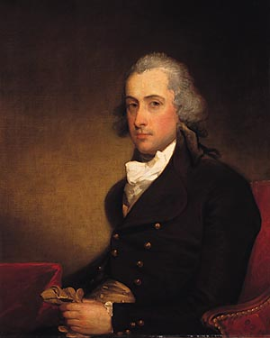
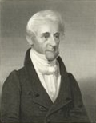

|
by Stefan Bielinski Stephen Van Rensselaer III was born in New York City in 1764 - the first child of Stephen Van Rensselaer II and Catharina Livingston. He grew up at the Van Rensselaer Manor House - home of the most advantaged family in the Upper Hudson region. Losing his father at age five, he was looked after by his uncle, Abraham Ten Broeck - trustee or administrator the Van Rensselaer estate. In 1775, his mother married Domine Westerlo. The terms of his father's will were clear and specific. Raised to succeed to the title "Lord of the Manor," young Stephen received some instruction in Albany but soon was sent away to study. After preparation in New Jersey and then Kingston during the war years, he graduated from Harvard College in 1782. He married Margarita, the daughter of General Philip Schuyler, on June 6, 1783. At age nineteen, he was six years younger than his bride. After bearing three children, she died in 1801. In 1802, he married Cornelia Patterson, daughter of the governor of New Jersey. She was the mother of ten children born between 1803 and 1820. On reaching his twenty-first birthday, he took title to the family estate called Rensselaerswyck or "Van Rensselaer's Manor." His long tenure as Manor Lord spanned Albany's transformation. In 1788, his first ward lot was valued substantially. After that, his main holdings were beyond the city limits. Perhaps, he never actually spent a night in the city. He joined the Albany Masonic Lodge in 1786 and, for a time, was an officer. In 1825, he was elected Grand Master for New York State. By 1790, he was established in the Van Rensselaer Manor House located on the road north of Albany in what was then Watervliet. At that time, he was by far the wealthiest individual in the Albany area and his estate was served by fifteen slaves.  He served in the New York State Assembly (1789) and Senate (1791) , as lieutenant governor of New York State (1795), general of the state militia, as a member of the United States House of Representatives (1822-29). He was the founder of Renssselaer Polytechnic Institute. Stephen Van Rensselaer III died in 1839 at the age of seventy-five. He is remembered in local lore as "The Last Patroon" and "The Good Patroon." Following his death, his former tenants rebelled against paying rents to his heirs. The subsequent conflict is known as the Antirent Wars. With assets at death estimated at ten million dollars, Fortune Magazine named him the tenth richest American of all time.
One of many portraits of the last patroon, this painting done by Gilbert Stuart during the 1790s is part of the Andrew W. Mellon Collection, at the National Gallery of Art, Washington, DC.
first posted: 7/3/01; last revised 4/10/09 |